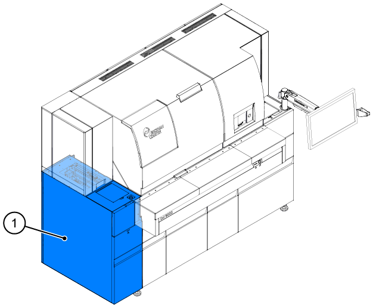
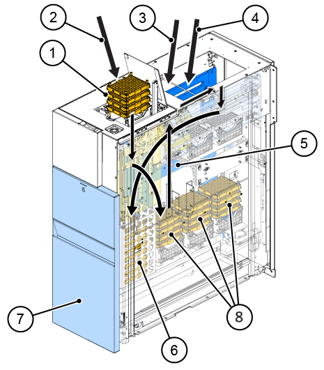
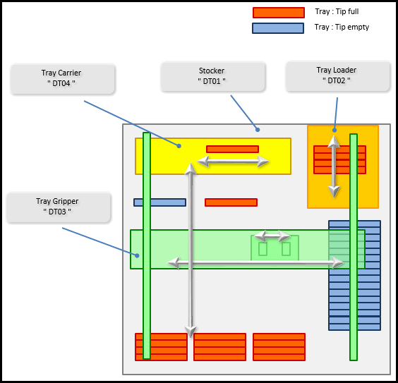
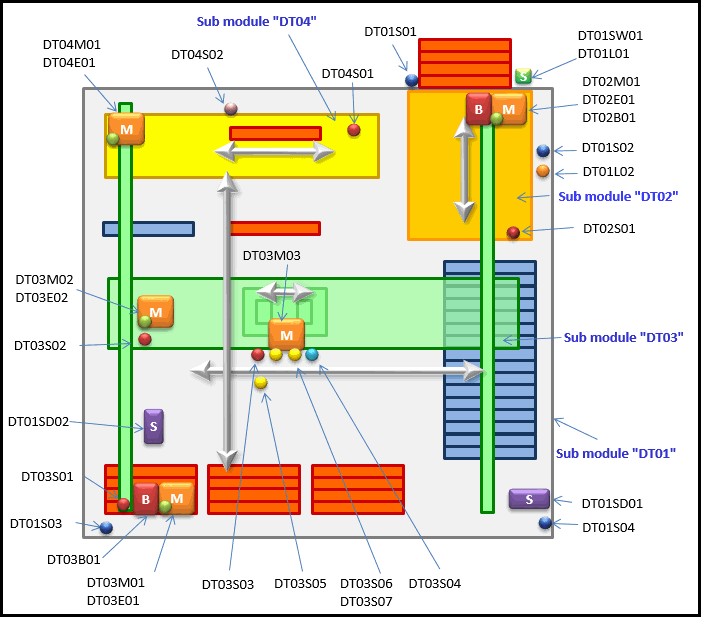
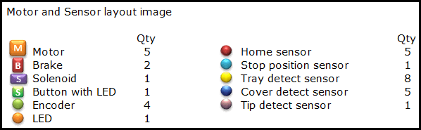
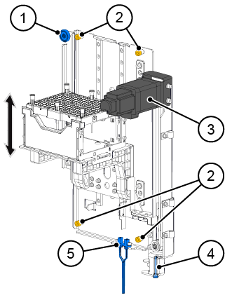
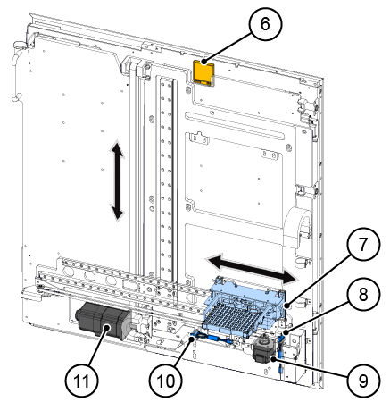
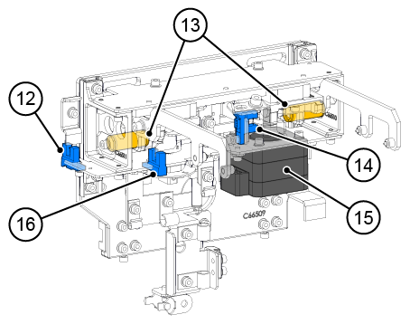
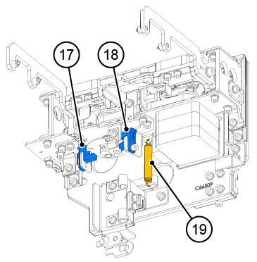
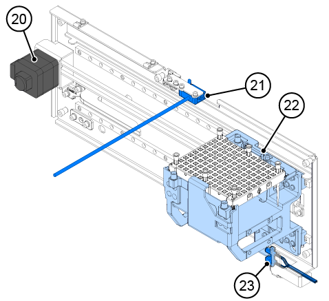

Operating Principles for the DispoTip Stocker
This topic includes information about the theory of operation, or operating principles, for the Disposable Tip (DispoTip) stocker module.
| Table of Contents |
|---|
| Function |
| Location |
| Operational Overview |
| Component Locations and Functions |
| Component and Interaction Block Diagram |
| Interacting and Intersecting Devices |
Function
The DispoTip stocker stores and supplies the disposable tip packs that have been loaded onto the instrument for use in sample pipetting. The module accepts tip packs from users, catalogs them, and presents them to both the aliquot and precision sample pipettors.
Location
The DispoTip module is located on the lower left side of the instrument.

| 1 | DispoTip module |
Operational Overview
The DispoTip Stocker operation can be divided into three primary tasks.
| Tip Pack (Full) Loading | |
|---|---|
|
This task stores full trays and stages one tray for delivery.
|
| Tip Delivery to Sample Pipettors | |
|---|---|
|
This task supplies tips to the sample pipettors.
|
| Tip Pack (Empty) Unloading | |
|---|---|
|
This task removes empty trays for disposal.
|
Component Locations and Functions
The following illustrations and tables describe DispoTip module component locations and functions.

| 1 | Tip trays in loader |
| 2 | Tip tray loader location |
| 3 | Tip delivery position (aliquot pipettor) |
| 4 | Tip delivery position (precision pipettor) |
| 5 | Tip tray gripper |
| 6 | Tray waste basket |
| 7 | Tray unload (discard) drawer |
| 8 | Tip trays in carriage stocker positions 1, 2, and 3 (position 3 is gripper home position) |

| High Level Submodules of the DispoTip Stocker | |
|---|---|
| Identification | Sub Module Name |
| DT01 | Stocker (Primary Module) |
| DT02 | Tray Loader |
| DT03 | Tray Gripper |
| DT04 | Tray Carrier |
|
Note: Use these identification keys to identify submodules and components in the images below. The arrows demonstrate direction of motion for each submodule.
|
|


| Module/Sub-Module | Classification | Identification | Component Name | Function |
|---|---|---|---|---|
| DT01 (Stocker Module) | Solenoid | DT01SD01 | Tray Waste Drawer Lock Solenoid | To lock the drawer when opening of the drawer is unavailable. |
| DT01SD02 | Tip Supply Chassis Gripper Drawer Lock Solenoid | To lock the drawer when opening of the drawer is unavailable. | ||
| Sensor | DT01S01 | Tray Loader Set Cover Sensor | To detect whether the set cover is open or closed. | |
| DT01S02 | Tip Supply Chassis Front Cover Sensor | To detect whether the front cover is open or closed. | ||
| DT01S03 | Tip Supply Chassis Back Cover Sensor | To detect whether the back cover is open or closed. | ||
| DT01S04 | Tray Waste Drawer Sensor | To detect whether the drawer is open or closed. | ||
| Button | DT01SW01 | Tray Loader Set Tray Switch | To use loading the tray kit into the stocker | |
| LED | DT01L01 | Tray Loader Set Tray Switch LED | Display loader status | |
| DT01L02 | Tray Waste Drawer Open LED | Display drawer lock status | ||
| DT02 (Tray Loader) | Motor | DT02M01 | Tray Loader Z Axis Motor | Tray Loader Z axis Motor |
| Brake | DT02B01 | Tray Loader Brake | Tray Loader Z axis Brake | |
| Encoder | DT02E01 | Tray Loader Z Axis Encoder | Tray Loader Z axis Encoder | |
| Sensor | DT02S01 | Tray Loader Z Axis Home Sensor | Tray Loader Z axis Home sensor | |
| DT03 (Tray Gripper) | Motor | DT03M01 | Tray Gripper Z Axis Motor | Tray Gripper Z axis Motor |
| DT03M02 | Tray Gripper Y Axis Motor | Tray Gripper Y axis Motor | ||
| DT03M03 | Tray Gripper Arm Axis Motor | Tray Gripper Arm axis Motor | ||
| Brake | DT03B01 | Tray Gripper Brake | Tray Gripper Z axis Brake | |
| Encoder | DT03E01 | Tray Gripper Z Axis Encoder | Tray Gripper Z axis Encoder | |
| DT03E02 | Tray Gripper Y Axis Encoder | Tray Gripper Y axis Encoder | ||
| Sensor | DT03S01 | Tray Gripper Z Axis Home Sensor | Tray Gripper Z axis Home Sensor | |
| DT03S02 | Tray Gripper Y Axis Home Sensor | Tray Gripper Y axis Home Sensor | ||
| DT03S03 | Tray Gripper Arm Axis Home Sensor | Tray Gripper Arm axis Home sensor | ||
| DT03S04 | Tray Gripper Arm Stop Sensor | Tray Gripper Arm axis stop position Sensor | ||
| DT03S05 | Tray Gripper Stock Tray Sensor | Collision detection at descent | ||
| DT03S06 | Tray Gripper Arm Gripping Sensor | Detect if the gripper is holding something | ||
| DT03S07 | Tray Gripper Arm Tray Gripping Sensor | Tray size detection Sensor | ||
| DT04 (Tray Carrier) | Motor | DT04M01 | Tip Supply Y Axis Motor | Tray Carrier Y axis Motor |
| Encoder | DT04E01 | Tip Supply Y Axis Encoder | Tray Carrier Y axis Encoder | |
| Sensor | DT04S01 | Tip Supply Y Axis Home Sensor | Tray Carrier Y axis Home Sensor | |
| DT04S02 | Tip Supply Tip Detect Sensor | To detect tip on the tip tray at the time of initialization and tip delivery failure. |

| 1 | Urethane molded bearing for cover open |
| 2 | Captive screws |
| 3 | Motor, encoder, brake |
| 4 | Belt tension adjustor |
| 5 | Home sensor |

| 6 | Reflector for tip supply tip detector sensor |
| 7 | Tray gripper |
| 8 | Gripper Y-axis home sensor |
| 9 | Gripper Z-axis motor, encoder, brake |
| 10 | Gripper Z-axis home sensor |
| 11 | Gripper Y-axis motor, encoder, brake |

| 12 | Gripper stock tray sensor |
| 13 | Spring for gripper arm gripping sensor |
| 14 | Gripper arm gripping sensor |
| 15 | Gripper arm axis motor |
| 16 | Gripper arm tray gripping sensor |

| 17 | Gripper arm axis home sensor |
| 18 | Gripper arm stop sensor |
| 19 | Spring for stock tray sensor |

| 20 | Tip supply Y-axis motor, encoder |
| 21 | Tip supply tip detect sensor |
| 22 | Tray carrier table with tray anti-flip assembly |
| 23 | Tip supply Y-axis home sensor |
Component and Interaction Block Diagram
For a detailed illustration of components and interactions, see the DxI9000 DispoTip Block Diagram.
Interacting and Intersecting Devices
The DispoTip Stocker interacts with the following modules:
- Aliquot Sample Pipettor
- Precision Sample Pipettor